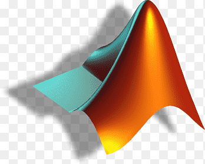

A First-Class Master’s degree in Data Analytics, combined with 1.5 years of hands-on professional experience, has equipped me with a strong foundation in data management, optimizing data pipelines, statistical analysis, building visualizations, and presenting impactful reports. My curiosity about numbers, statistics, and problem-solving evolved into a deep interest in algorithms, ultimately leading me to analytics. As a self-driven individual, I have continually advanced my technical skills through certifications and practical case studies. These projects have enabled me to master concepts such as clustering algorithms and predictive modeling, applied to areas like customer profiling, market basket analysis, marketing channel optimization, and inventory management. Exposure to customer service and business development roles has not only deepened my understanding of industry operations but also refined my analytical thinking, communication, and delivery skills, with a focus on providing accurate, efficient, and tailored solutions. Building on my diverse field experience and expertise in analytics, I am now seeking an analytics-focused role where I can fully unlock the power of data to drive insights and contribute to business growth.
Tools Exposure
Python
MySQL
MS Excel
PowerBI
R
Tableau
SPSS
Salesforce
SAS
Qlik
HubSpot

MATLAB
HTML
CSS
JavaScript
GitHub
Case Studies
Market Basket Analysis for Retail Insights
Analyzed 500K transactions from 4K customers using Python and MS Excel to uncover purchasing patterns through Apriori-based market basket analysis. Generated 800+ association rules and segmented item pairs across revenue bands ($3K–$350K) to inform tailored cross-selling and up-selling strategies. Designed a dynamic recommendation function and conducted month-wise and region-wise analyses to optimize product placement, layout, and seasonal promotions, driving targeted sales strategies and enhanced revenue impact.
AI-Driven Customer Service Impact on Brand Perception
Analyzed consumer responses to assess the impact of AI on customer satisfaction using multiple linear regression and advanced statistical methods. Identified key satisfaction drivers and disproved generational differences between Gen Z and Millennials. Applied correlation analysis to examine AI empathy’s effect on satisfaction and developed predictive models, revealing a 20.4% variance in brand perception. Delivered actionable insights to improve customer experience through data-driven strategies.
Analyzed multi-store database operations to uncover revenue drivers, inventory optimization opportunities, and shipping inefficiencies. Executed advanced SQL queries, such as multi-table joins, CTEs, and window functions, to identify top-performing brands, stock availability gaps, and seasonal sales patterns. Delivered nine actionable recommendations, including expansion strategies based on customer density and solutions to reduce a 15% late shipment rate, improving operational efficiency and revenue potential.
Created 4 interactive Power BI dashboards analyzing a dataset of 10K+ credit card customers, covering demographics, financial performance, satisfaction, and usage patterns. Defined 15 KPIs, including total card revenue, average acquisition cost, and customer growth. Leveraged 10+ DAX queries and dynamic filters for granular, customizable analysis. Delivered actionable insights on customer behavior, financial trends, and retention strategies to support data-driven decision-making.
Marketing Channel Effectiveness Analysis for FoodFusion
Analyzed FoodFusion's marketing campaign data to assess subscription and retention rates across channels, age groups, meal types, and dietary preferences. Used statistical tests and logistic regression to identify key patterns and influencing factors. Recommended targeting Vegan and Vegetarian options during low-performing months and focusing on the 25-36 age group via Instagram and Push notifications to optimize customer acquisition and retention.
Optimizing Instagram Post Reach with Predictive Analytics
Analyzed Instagram post performance metrics, including impressions, likes, shares, and engagement rates, to optimize content strategy for over 10,000 posts. Conducted a detailed reach source analysis to uncover visibility patterns and enhance audience engagement. Developed a predictive model to estimate post reach, leading to a 41% increase in profile visits and follower conversions through actionable, data-driven insights.
Key Concepts: Predictive Analytics; Social media Content Optimization; Reach and Engaement Analysis
Decoding Artworks with CNN-Based Image Classification
Developed a series of convolutional neural networks (CNNs), including ResNet50 and ConvNeXt, for artwork analysis, improving model accuracy by 12.5% through data augmentation and hyperparameter fine-tuning. Enhanced model performance with 54.89% better validation accuracy using systematic feature engineering and regularization techniques. Streamlined dataset preprocessing to ensure balanced class distribution, resulting in a model achieving 74.4% accuracy after iterative testing.
Key Concepts: Convolutional Neural Networks; Data Augmentaion; Hyperparameter Tuning;
Grocery Store Customer Segmentation for Targeted Marketing
Segmented over 2,000 grocery customers using unsupervised clustering techniques to analyze purchasing behavior, family structure, and income levels. Applied PCA to streamline clustering while retaining 85% variance, identifying four primary customer profiles. Delivered actionable insights to optimize product offerings and targeted marketing strategies, resulting in tailored approaches to enhance customer engagement and satisfaction.
Key Concepts: Clustering; Principal Component Analysis; Customer Profiling
For any potential opportunities or collaborations, you can reach out through any of my profiles.
Thank You!
Education
Master of Science in Data Analytics
Queen Mary University of London , September 2022 - January 2024
Grade - Distinction
Modules - Probability and Statistics with Data; Storing, Manipulating and Visualising Data; Computational Statistics; Neural Networks and Deep Learning; Optimisation of Business Processess
Dissertation - Generative Modelling of images using Generative Adversarial Networks
Bachelor of Engineering in Electronics and Communication
Osmania University (CBIT) , August 2016 - September 2020
Grade - Distinction with First Class Honors
Modules - Programming and Problem Solving; Data Structures; Fundamentals of Database Management Systems; Machine Learning using Python
Dissertation - Analysis of Doppler Collision in Kinematic Conditions and it's Mitigation for NavIC Systems
Experience
Insights Analyst
RLP Securities, Hyderabad. November 2021 - July 2022
Conducted comprehensive exploratory data analysis (EDA) on over 100k investment data points spanning five years using advanced time series analysis to uncover significant market trends that informed strategic decisions.
Optimized the development of a robust data pipeline integrating information from 2000 financial statements and performance reports, resulting in a remarkable 70% reduction in processing time and enabling swift portfolio management decisions.
Generated five detailed reports enriched with 15 interactive dashboards that facilitated effective data-driven decision-making for stakeholders, contributing to a notable 12% increase in investment returns over the review period.
Spearheaded bi-weekly client consultations that ensured alignment of investment strategies with shifting business objectives and market conditions, fostering stronger client relationships and enhancing overall satisfaction.
Analyst
Deloitte, Hyderabad. January 2021 - September 2021
Deployed 30 reusable User Interface (UI) components utilizing Salesforce LWC across 10 web pages, optimizing workflows and achieving a remarkable reduction in development time by 35%.
Integrated data from UI components processing daily batches of 15k records and weekly batches of 50k records to ensure high data quality and readiness for analysis in reporting workflows.
Automated data validation processes that significantly reduced manual effort by 40%, enhancing overall data accuracy across 3 workflows for improved decision-making.
Developed 2 weekly reports focused on tracking 12 Key Performance Indicators (KPI), collaborating with cross-functional teams to formulate strategies that resulted in a notable increase of user engagement by 25%.
Certifications
Power BI Data Analyst Associate
Microsoft 2024
Data Analytics with Excel and R Professional Certificate
IBM 2024
Marketing Analytics for Business
Datacamp 2022
Foundational Degree in Programming and Data Science